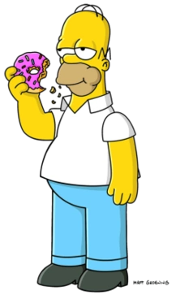
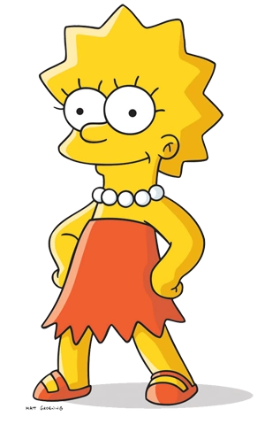

Сімейство Сімпсонів

«Сі́мпсони» (англ. «The Simpsons») — американський анімаційний сатиричний серіал, створений Меттом Ґрейнінґом для компанії «Fox». Мультсеріал — сатирична пародія на стиль життя середнього класу США, втілена в сім'ї Сімпсонів, яка складається з Гомера, Мардж, Барта, Ліси та Меґґі. Більшість подій відбуваються у вигаданому містечку Спрінґфілді (англ. Springfield). Шоу висміює численні аспекти життя людей, американську культуру, суспільство, навіть американське телебачення.
Гомер Сімпсон
Гомер — милий та кумедний, проте іноді грубий і неввічливий батько родини. Він має очевидні вади: товстий, лисий і не дуже розумний. Нерідко він поводиться як блазень, абсурдно, егоїстично і нетактовно, але все ж лишається симпатичним.
- Будь ласка, не їжте мене! У мене є дружина і діти, їжте їх! (Гомер)
- Менопауза - це коли лелеку застрелює нетверезий мисливець. (Гомер)
- Коли я дивлюсь на усміхнені обличчя дітей, я лише знаю, що вони планують мене чимось вдарити. (Гомер)

Барт — найстарша дитина Гомера і Мардж Сімпсон. У нього також є дві молодші сестри — Ліса і Меґґі. Барт є втіленням образу бешкетника та посереднього учня у школі. Разом зі своїм батьком Барт є одним із найвідоміших персонажів у цьому серіалі. Вік Барта — 10 років, а в одній із серій на запитання Гомера він відповідає, що його день народження — 23 лютого. Найвизначніші риси характеру Барта: непослух, бешкетництво, бунтарство, неповага до авторитетів, дотепність, саркастичність.
- Я — Барт Сімпсон. А ти, чорт забирай, хто?! (Барт)
- Ай, карамба! (Барт)
- Помножте на нуль. (Барт)
Ліза Сімпсон
Надзвичайно розумна восьмирічна дівчинка, одина з найрозумніших у серіалі (за даними різних серій її IQ становить 156 чи 159). Феміністка. Грає на саксофоні. Полюбляє дивитися мультфільм «Чух і Сверблячка» разом з сім'єю.
- Привіт білочко. Чи знаєте ви, що ви північна сітчаста білка? Так, ви дуже зв’язані між собою. (Ліза)
- Замовкни, мозку. Зараз у мене є друзі, ти мені більше не потрібен. (Ліза)
- Коли я одружуся, я буду зберігати своє прізвище ... ммм, можливо, мені слід сказати: "якщо я вирішу одружитися" ... (Ліза)